Lecture: Neural Networks
Actuarial Data Science - Open Learning Resource
Recommended Reading
- The Elements of Statistical Learning (ESL): Sections 11.3–11.7 (the technical details of backpropagation on page 396 are not required)
Learning Objectives
- Neural networks and deep learning are increasingly used in insurance and finance, but they can feel intimidating. The aim of this lecture is to demystify the basic building blocks so that you can recognise when a simple neural network might be useful, and understand its strengths and limitations compared with more classical models.
- Explain the idea of deep learning and neural networks
- Describe the main characteristics of neural networks and the circumstances in which they should be considered as alternatives to the techniques previously discussed
- Perform predictive modelling using simple neural networks
Introduction
Deep Learning
Deep learning has attracted significant attention across a wide range of applications:
- Customer experience
- Computer vision
- Natural language processing
- Autonomous vehicles
- Robotics
- Actuarial science (e.g. mortality forecasting)
- …
Introduction
- Artificial neural networks (ANNs) and deep learning (DL) are currently among the most actively studied machine learning methods.
- What is deep learning? Multi-layer neural networks.
- They are also among the most powerful predictive models.
See also: Google Trends comparing search interest in different methods.
Introduction (continued)

Introduction (continued)
Artificial neural networks (ANNs) have experienced several cycles of “rise and fall” in popularity over time.
They are inspired by biological studies of neural systems.
Why have they become popular again?
- Advances in computing power: Graphics Processing Units (GPUs) are well suited for training ANNs.
- Availability of large-scale datasets.
- Development of improved training techniques (e.g. Hinton, Osindero, and Teh (2006).)
Neural Network Structure
Definition of A Single Neuron
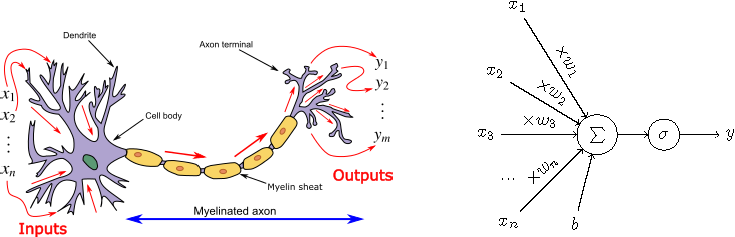
y = f(\mathbf{x}) = \sigma\left(\sum_{i=1}^{n} w_i x_i + b \right) - \mathbf{x} = (x_1, \dots, x_n): input features- w_i: weights
- b: bias term - \sigma(\cdot): activation function - y: output
Activation Functions
- Transform the output of a neuron (e.g., scale it to (0,1) or (-1,1)).
- Introduce nonlinearity into the model.
- Without an activation function, a neural network reduces to a linear model.
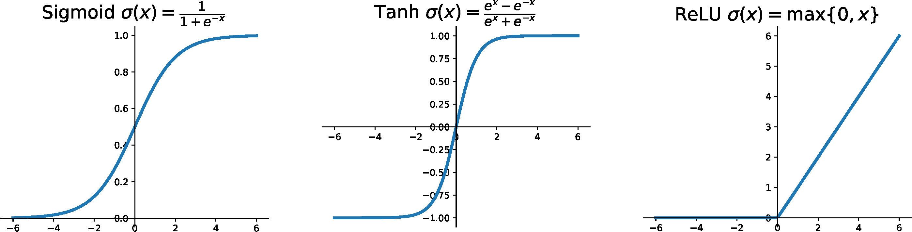
Neural Network
- A neural network is a network of neurons.
- How are neurons connected?
- The output of one neuron can be used as the input to one or more other neurons.
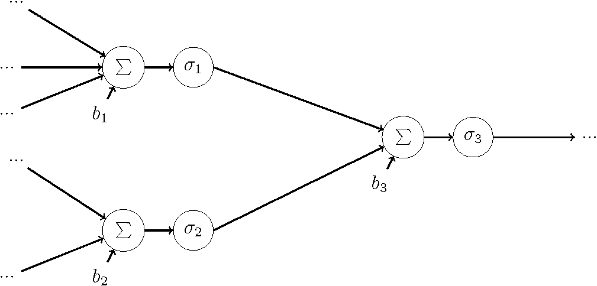
- For simplicity, we will use a simple circle to represent a neuron in the following slides.
Fully Connected Feed-Forward Neural Network
- One classical way of organising neurons in a neural network is to arrange them in layers.
- Neurons in the same layer do not connect to each other.
- Neurons only connect to neurons in adjacent layers.
- If the connections do not form cycles, it is called a feed-forward neural network.
Feed-Forward Neural Network
Each output node of a feed-forward neural network can be viewed as a function y = f(\mathbf{x}), with weights w and biases b as parameters.
The function f is a composition of functions of the form
f(\mathbf{x}) = \sigma\Big( \sum w_L[i] \, \cdots \, \sigma\big( \sum w_2[i] \, \sigma(\sum w_1[i] x_i + b_1) + b_2 \big) \cdots + b_L \Big)
- Note that the activation functions \sigma in the above expression can be different (for simplicity, we omit subscripts).
The Universal Approximation Theorem
(Theorem) Given enough hidden nodes, a one-hidden-layer feed-forward neural network with a linear output and sigmoid activation functions can approximate any continuous function to arbitrary accuracy on a closed and bounded input domain.
Many other activation functions also satisfy this property.
This theorem tells us that, even with one hidden layer, feed-forward neural networks can represent a wide range of candidate predictors — they are very powerful.
The Universal Approximation Theorem (continued)
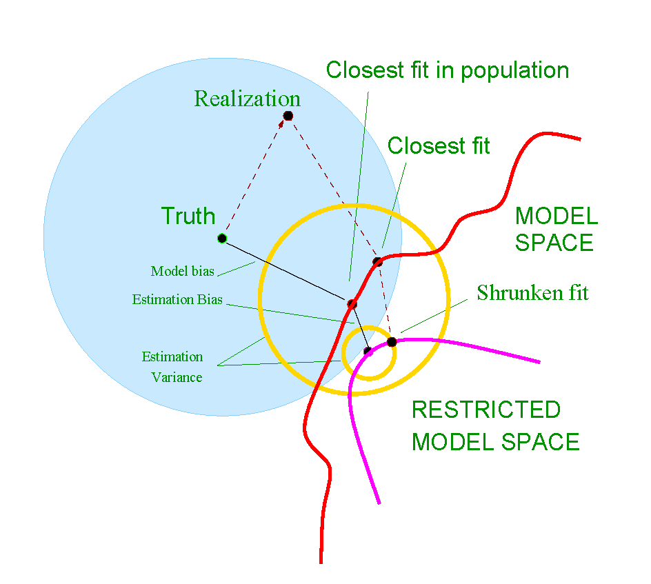
Output Layer for Regression and Classification
- For regression, if the output range needs to be (-\infty,+\infty), the activation function in the output node is typically omitted.
- For classification, the number of output nodes is usually equal to the number of classes. Each output node represents the score or probability that an observation belongs to a particular class.
Loss Function
- As mentioned previously, a feed-forward neural network is just a function \hat{\mathbf{y}} = f(\mathbf{x}); that is, for an input \mathbf{x}, it generates a prediction \hat{\mathbf{y}}.
- Given the true observation \mathbf{y}, we can define a prediction loss, as for any other prediction method: L = L(\mathbf{y}, \hat{\mathbf{y}}).
- Example (regression): we can use the SSE loss L = \frac{1}{N}\sum_{i=1}^N (y_i - \hat{y}_i)^2.
- Example (multi-class classification): we can use the cross-entropy loss.
- The response variable is a vector \mathbf{y} with one-hot encoding.
- The output of the neural network is also a vector, whose elements represent the probabilities that an observation belongs to each class.
- The cross-entropy loss is defined as L = -\sum_{i=1}^{C} y_i \log(\hat{y}_i), where C is the number of classes.
Example 1: Neural Network for Linear Regression
If the output node has no activation function and the SSE loss is used, the following neural network is equivalent to a multiple linear regression model: y = w_1 x_1 + w_2 x_2 + w_3 x_3 + b.
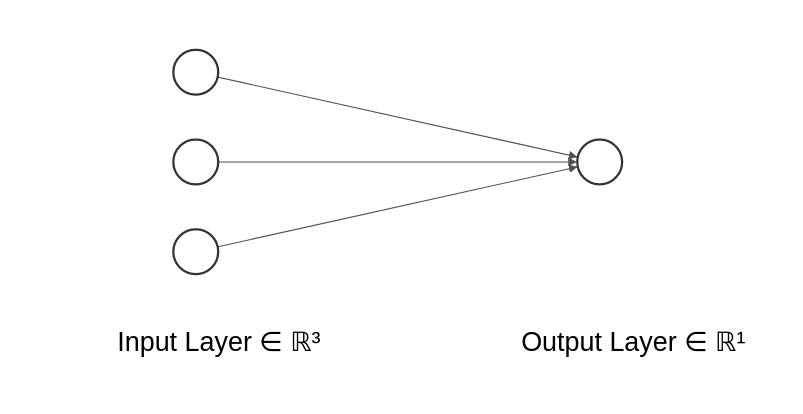
Example 2: Neural Network for Logistic Regression
If the output node uses a sigmoid activation function and the cross-entropy loss is used, the following neural network is equivalent to logistic regression for binary classification.
Example 3: Multi-class Classification
Use the cross-entropy loss.
The last layer uses the softmax function: \sigma(T)_k = \frac{e^{T_k}}{\sum_{l=1}^{K} e^{T_l}}, \quad k = 1, \dots, K where T_k is the score for class k, and K is the number of classes.
The softmax function converts the outputs into probabilities that sum to 1.
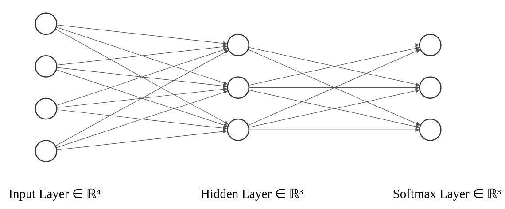
Shrinkage / Regularisation
Similar to other methods, we can add a shrinkage term to the loss function to achieve regularisation and reduce overfitting.
L_2 shrinkage: L(y, \hat{y}) + \lambda \lVert \mathbf{w} \rVert_2^2
L_1 shrinkage: L(y, \hat{y}) + \lambda \lVert \mathbf{w} \rVert_1
Note that the bias term b is usually not regularised.
Fitting Neural Networks
Scaling of the Inputs
- The scaling of the inputs determines the effective scaling of the weights in the bottom layer, which can have a large effect on the quality of the final solution.
- At the outset, it is best to standardise all inputs to have mean 0 and standard deviation 1.
- This ensures all inputs are treated equally in the regularisation process.
Fitting Neural Network (1)
Neural networks are typically trained using gradient descent–type algorithms.
Recap: Gradient descent iteratively solves \arg\min_{\mathbf{x}} \, \mathcal{L}(\mathbf{x}) as follows:
- Initialise i = 0, \mathbf{x}_0.
- Repeat until a stopping criterion is satisfied:
- \mathbf{x}_{i+1} = \mathbf{x}_i - \gamma \nabla_{\mathbf{x}} \mathcal{L}(\mathbf{x}_i), where \gamma > 0 is a small constant.
- i \leftarrow i + 1.
- Output \mathbf{x}_i.
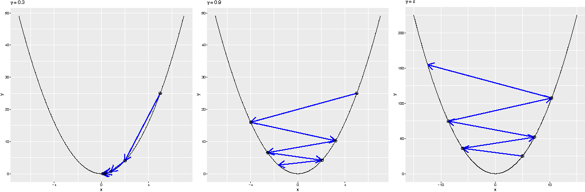
Fitting Neural Network (2)
- For large neural networks and large training datasets, stochastic gradient descent (SGD) is typically used.
- The key issue is how the gradients are computed. The answer is backpropagation.
In popular neural network toolboxes (e.g. TensorFlow, PyTorch, and Caffe), backpropagation is already implemented. Variants of (stochastic) gradient descent algorithms are also available, so one can simply choose an algorithm without needing to compute gradients or perform optimisation manually.
Main Challenges of Training Deep Neural Networks
- The neural network loss function has a very complex, non-convex landscape.
- Neural network models are very powerful and can easily overfit (e.g. requiring large datasets and techniques such as early stopping).
- Large-scale data and computation: training often requires hardware acceleration, such as GPUs and TPUs.
- Vanishing and exploding gradients.
Epoch, Batch Size, and Iteration
When the dataset is too large to be processed all at once, it is divided into smaller batches that are fed to the model sequentially.
- Epochs: One epoch is when the entire dataset is passed forward and backward through the neural network once.
- A hyper-parameter that controls the number of complete passes through the training dataset.
- Batch size: The number of training observations in a single batch.
- A hyper-parameter that controls how many observations are processed before updating the model parameters.
- Iterations: The number of batches required to complete one epoch.
- Example: Suppose we have 3000 training observations. If we divide the dataset into batches of size 500, then it takes 6 iterations to complete one epoch.
Different Gradient Descent Algorithms
- Batch Gradient Descent: batch size = size of the training set
- Stochastic Gradient Descent: batch size = 1
- Mini-Batch Gradient Descent: 1 < batch size < size of the training set
- In practice, common batch sizes include 32, 64, and 128, chosen to fit the memory constraints of GPU or CPU hardware.
Early Stopping
- Stop training a neural network early, before it overfits the training dataset.
- Stop training when the generalisation error increases (validation set approach).
- Model selection (early stopping):
“Every time the error on the validation set improves, we store a copy of the model parameters. When the training algorithm terminates, we return these parameters, rather than the latest parameters.”
Other Training Techniques
- The performance of neural networks can be sensitive to the optimisation method used.
- There are many tricks and heuristics. Here, we introduce one: dropout (regularisation).
Dropout
- Dropout is a regularisation technique that helps prevent neural networks from overfitting.
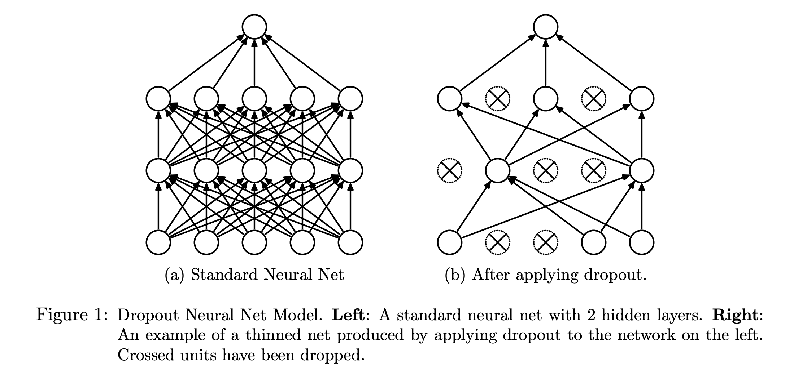
More Complex Neural Networks
More Complex Neural Networks
- We have learned some examples of fully connected feed-forward neural networks.
- Neural networks can be highly flexible and versatile. For example, below is the LeNet architecture (a convolutional neural network), commonly used for image classification.
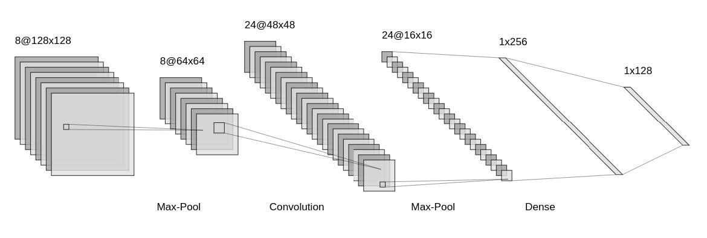
Some More Modern Deep Neural Networks
- Modern Neural Network are mostly designed and used for,
- Computer vision.
- Speech recognition.
- Natural language processing.
- etc.
- LSTM-based encode-decoder models
- ResNet
- Attention-based models
- Transformers
- These models have the potential to be adapted to actuarial applications when large-scale training data are available.
- We may see increasing adoption of these methods in actuarial practice in the future.
Modern Deep Neural Networks: Complex Architectures
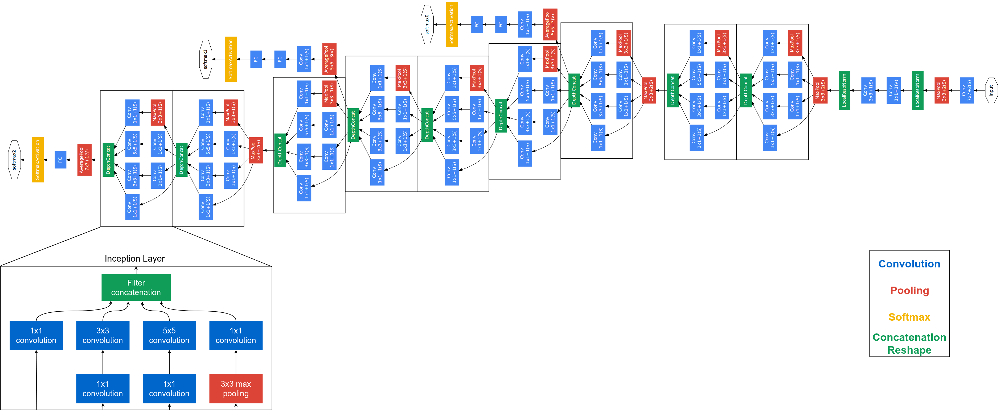
Mordern Deep Neural Network: Huge Number of Parameters.
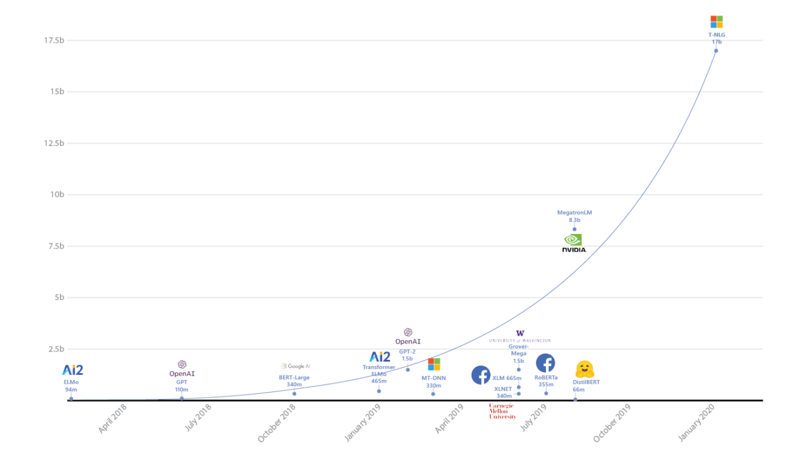
Current “Published” Largest Neural Networks
- GPT-3 (Generative Pre-trained Transformer 3)
- Developed by OpenAI
- Natural language modelling
- 175 billion parameters
- Estimated to cost millions of US dollars to train once using cloud computing resources
Current “Published” Largest Neural Networks (continued)
- From the GPT-3 paper:
“… Due to a bug revealed by this analysis, filtering described above failed on long documents such as books. Because of cost considerations it was infeasible to retrain the model on a corrected version of the training dataset …”
— Brown et al. (2020) (supplementary materials)
- There may be larger neural networks that are not publicly disclosed by large technology companies.
Software and Frameworks
Conclusions
- Deep Neural Network can be very powerful.
- There are many other fascinating (but often complex) deep learning models and applications that we have not covered. However, the fundamental concepts in these slides should prepare you for further study in this area.
- Training large neural networks is computationally expensive and requires large amounts of data.
- Neural networks are often difficult to interpret.
- Due to the large number of parameters, model sizes can be very large (e.g. model compression and distillation can help address this).
- Why neural networks work so well is still not fully understood.
- When to use neural networks: when high predictive accuracy is required and interpretability is less important.
Using R
Using R
caretneuralnetANN2keras